7.6. Guided Local Search (GLS)
Guided Local Search is another successful meta-heuristic that emerged in the ‘90. It has been successfully applied to a large number of difficult problems and has been particularly successful in Routing Problems.
Our Guided Local Search implementation is especially tailored for the Routing Library. It uses a callback to a cost function that takes two int64 indices corresponding to 2 nodes[1], i.e. the cost
of traversing an arc. If you can successfully translate the cost of using two variables  and
and  one after the other in your objective function for your specific problem, then you can use
our implementation out of the box. Otherwise, you’ll have to create your own version. We hope that after reading this section you’ll have a better idea on how you can do it. The last sub-section gives you some hints if you want to adapt our implementation to solve your problem.
one after the other in your objective function for your specific problem, then you can use
our implementation out of the box. Otherwise, you’ll have to create your own version. We hope that after reading this section you’ll have a better idea on how you can do it. The last sub-section gives you some hints if you want to adapt our implementation to solve your problem.
Warning
Our Guided Local Search implementation is especially tailored for the Routing Library
Along the way, we’ll give you enough information to fully understand (almost) all the code and understand the Routing Library (RL) conventions[2].
Among the three implemented meta-heuristics implemented in or-tools, GLS has certainly the most refined and efficient (and thus complicated) implementation.
7.6.1. The basic idea
The GLS is a penalty-based method that sits on top of a Local Search. Its originality and efficiency stems from the way it penalizes some features of a solution along the search. We assume minimization.
7.6.1.1. The augmented objective function
Denote by 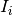 the following indicator function:
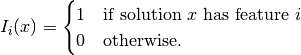
The GLS meta-heuristic penalizes some features of a local optimum. Let  be a penalty attached to a feature and
be a penalty attached to a feature and  denote the original objective function.
The GLS meta-heuristic uses the following augmented objective function 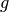:
denote the original objective function.
The GLS meta-heuristic uses the following augmented objective function 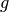:
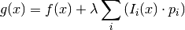
The idea is to let the Local Search find solutions with this new augmented objective function. 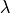 is called the penalty factor and can be used to tune the search to find similar solutions (a low value, intensification) or completely different solutions (a high value, diversification).
7.6.1.2. The penalties and their modifications
Penalties usually start with a  value and are incremented by
value and are incremented by  with each local optimum. The originality and efficiency of the GLS is that a feature is only penalized if its utility is large enough.
The idea is to penalize costly features but not penalize them too much if they often show up. The utility function for a feature in a solution
with each local optimum. The originality and efficiency of the GLS is that a feature is only penalized if its utility is large enough.
The idea is to penalize costly features but not penalize them too much if they often show up. The utility function for a feature in a solution  is defined as follows:
is defined as follows:
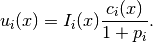
where 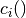 denotes the cost associated with feature in solution .
If a feature is not present in a solution , its utility for this solution is (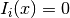). Otherwise, the utility is proportional to the cost 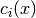 of this feature in the solution
but tends
to disappear whenever this feature is often penalized. A feature that shows up regularly in local optima might be part of a good solution.
7.6.2. Our implementation
Our implementation is at the same time specific for Routing Problems but also generic for any Routing Problem. The chosen features of a solution is the fact that an arc (i,j) is traversed or not for
this solution. So, we will speak of a (i,j) Arc feature (and talk about 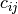, 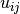 and  ).
).
Our implementation is practically following the basic GLS guidelines by the book.
Let’s denote by 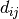 the cost of traversing an arc  in a given solution. In our case, this is given by the cost of the objective function for that arc and we have
in a given solution. In our case, this is given by the cost of the objective function for that arc and we have  . This cost can depend on the type of vehicle used if we use different types of vehicles.
. This cost can depend on the type of vehicle used if we use different types of vehicles.
Our augmented objective function is given by
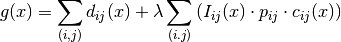
Within the Routing Library, the penalty factor is given by the gflags command line flag routing_guided_local_search_lambda_coefficient and is set to the value 0,1 by default.
7.6.3. GuidedLocalSearchPenalties
Penalties are stored in a GuidedLocalSearchPenalties class. This class is abstract and two implementations exist depending on the data structure to store the penalties:
- GuidedLocalSearchPenaltiesTable: for dense GLS penalties using a matrix std::vector<std::vector<int64> > and
- GuidedLocalSearchPenaltiesMap: for sparse GLS penalties using a hash_map[3].
By default, the dense version is used but you can switch to the sparse version by setting the cp_use_sparse_gls_penalties flag to true on the command line.
Here is the skeleton of the abstract class:
class GuidedLocalSearchPenalties {
public:
virtual ~GuidedLocalSearchPenalties() {}
virtual bool HasValues() const = 0;
virtual void Increment(const Arc& arc) = 0;
virtual int64 Value(const Arc& arc) const = 0;
virtual void Reset() = 0;
};
An Arc is simply a (from,to) pair:
typedef std::pair<int64, int64> Arc;
7.6.4. The abstract GuidedLocalSearch class
The GuidedLocalSearch class is a pure abstract base class. Two specialized implementations exist:
- BinaryGuidedLocalSearch (2-indices version): when all vehicles have the same cost to traverse any arc and
- TernaryGuidedLocalSearch (3-indices version): when the cost of traversing an arc also depends on the type of vehicle
 .
.
We discuss these two classes in details later on.
7.6.4.1. To compare two Arcs
To compare two arcs, we use the following comparator:
struct Comparator {
bool operator()(const std::pair<Arc, double>& i,
const std::pair<Arc, double>& j) {
return i.second > j.second;
}
};
This struct is called a functor (or function object) and is basically a function call encapsulated in a class (or a struct). This is done by overloading the function call operator (operator()) of the class (or struct)[4].
Notice that we compare the double values attached to each Arcs in the (Arc, double) pairs. We’ll use this Comparator struct to compare utilities attached to Arcs.
7.6.4.2. The variables and the constructor
Let’s start with the (protected) variables of the GuidedLocalSearch class:
IntVar* penalized_objective_;
Assignment assignment_;
int64 assignment_penalized_value_;
int64 old_penalized_value_;
const std::vector<IntVar*> vars_;
hash_map<const IntVar*, int64> indices_;
const double penalty_factor_;
std::unique_ptr<GuidedLocalSearchPenalties> penalties_;
std::unique_ptr<int64[]> current_penalized_values_;
std::unique_ptr<int64[]> delta_cache_;
bool incremental_;
We cover the most interesting variables.
The penalized_objective_ IntVar represents the penalized part of the penalized objective function: 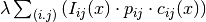. When there are no penalties, the pointer penalized_objective_ is set to nullptr. Actually, the expression of penalized_objective_ is a little bit more complicated than that because of our choice of added constraints. See the ApplyDecision() method below for more details.
We keep the current solution in assignment_ as usual.
assignment_penalized_value_ is the value of the expression for the current solution. old_penalized_value_ is used to update the penalized value incrementally in the AcceptDelta method.
vars_ is an std::vector with our node variables.
indices_ is a hash_map to quickly find the index of a variable given as IntVar*.
penalty_factor is the penalty factor .
The penalties computed during the search are stored in a GuidedLocalSearchPenalties object pointed to by the penalties_ variable: for an Arc arc, penalties_->Value(arc) returns its current penalty.
Finally, the three last variables are used to update the penalized costs incrementally in the AcceptDelta() method. We’ll discuss this method in details below.
The constructor is quite straightforward:
GuidedLocalSearch(Solver* const s, IntVar* objective, bool maximize,
int64 step, const std::vector<IntVar*>& vars,
double penalty_factor);
where step is the usual step used to force the objective function to improve.
7.6.4.3. The pure virtual methods and the helpers
The pure virtual methods that must be defined in a specialized GuidedLocalSearch class are:
virtual int64 AssignmentElementPenalty(const Assignment& assignment,
int index) = 0;
virtual int64 AssignmentPenalty(const Assignment& assignment, int index,
int64 next) = 0;
virtual bool EvaluateElementValue(const Assignment::IntContainer&
container,
int64 index, int* container_index,
int64* penalty) = 0;
virtual IntExpr* MakeElementPenalty(int index) = 0;
The used of 2 indices (in the signature of AssignmentPenalty) indicates that our GuidedLocalSearch class is really tailored to deal with arcs. The best way to understand what these methods are supposed to do is to study their implementations in details.
AssignmentElementPenalty() returns the penalized value associated to the arc leaving node
in a given solution assignment.
This penalized value is (for minimization) equal to 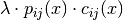 for a given solution .We need to do do a little incursion in the Routing Library (RL) before we can go on.
The RL (Routing Library) encodes the traversing of an arc
in a solution with vars_[i] = j, i.e. from node go to node where vars_[i] denotes the IntVar
variable corresponding
to node and vars_ is an std::vector of such variables. Back to AssignmentElementPenalty.Here is the implementation of this method for the BinaryGuidedLocalSearch class:
int64 AssignmentElementPenalty( const Assignment& assignment, int index) { return PenalizedValue(index, assignment.Value(vars_[index])); }
where the PenalizedValue(int64 i, int64 j) helper method computes the penalized value for a given arc
:1 2 3 4 5 6 7 8 9 10 11 12 13 14 15
int64 PenalizedValue(int64 i, int64 j) { const Arc arc(i, j); const int64 penalty = penalties_->Value(arc); if (penalty != 0) { const int64 penalized_value = penalty_factor_ * penalty * objective_function_->Run(i, j); if (maximize_) { return -penalized_value; } else { return penalized_value; } } else { return 0; } }
The test if (penalty != 0) on line 4 is simply to avoid costly objective_function_->Run(i, j) calls.
AssignmentPenalty() returns the cost of traversing an arc
in a given solution assignment. It is the cost for a solution to have arc (feature) .
is given by the index
of the IntVar variable corresponding to node and next is the node index corresponding to node j. For the BinaryGuidedLocalSearch, this method is defined as:int64 AssignmentPenalty(const Assignment& assignment, int index, int64 next) { return objective_function_->Run(index, next); }
This cost is the same for all vehicles. In the case of the TernaryGuidedLocalSearch class, we need to take the type of vehicle traversing the arc
into account.
We added a reference to a given Assignment assignment to induce from this solution assignment what the type of vehicle
traversing arc is. The type of vehicle traversing from node is given by the secondary_vars_[i] variable:int64 AssignmentPenalty(const Assignment& assignment, int index, int64 next) { return objective_function_->Run(index, next, assignment.Value(secondary_vars_[index])); }
EvaluateElementValue() evaluates the penalized value of a given arc
. It does so by using a shortcut to Assignment::IntContainers instead of Assignments and IntVarElements
instead of IntVars for efficiency. It also tests if a node is part of a solution. In the Routing Library, one can disable a node, i.e. make this node disappear as it never existed. If the node is
not disabled, i.e. active, the penalized value is stored in a variable pointed to by penalty and the method returns true, otherwise it returns false.Here is the implementation for the BinaryGuidedLocalSearch class:
bool EvaluateElementValue( const Assignment::IntContainer& container, int64 index, int* container_index, int64* penalty) { const IntVarElement& element = container.Element(*container_index); if (element.Activated()) { *penalty = PenalizedValue(index, element.Value()); return true; } return false; }
The EvaluateElementValue() method is only used in the Evaluate() helper of the GuidedLocalSearch:
1 2 3 4 5 6 7 8 9 10 11 12 13 14 15 16 17 18 19 20 21 22 23 24 25 26 27 28
int64 Evaluate(const Assignment* delta, int64 current_penalty, const int64* const out_values, bool cache_delta_values) { int64 penalty = current_penalty; const Assignment::IntContainer& container = delta->IntVarContainer(); const int size = container.Size(); for (int i = 0; i < size; ++i) { const IntVarElement& new_element = container.Element(i); IntVar* var = new_element.Var(); int64 index = -1; if (FindCopy(indices_, var, &index)) { penalty -= out_values[index]; int64 new_penalty = 0; if (EvaluateElementValue(container, index, &i, &new_penalty)) { penalty += new_penalty; if (cache_delta_values) { delta_cache_[index] = new_penalty; } } } } return penalty; }
This method updates the penalty of the whole solution given by a delta Assignment and is only called in AcceptDelta(). Recall that this delta is the difference between the last accepted solution
 of the Local Search
and the candidate solution we are currently testing. We will not go into all the details. Just notice how the penalized value (variable penalty) is updated on lines 14 and 20.
of the Local Search
and the candidate solution we are currently testing. We will not go into all the details. Just notice how the penalized value (variable penalty) is updated on lines 14 and 20.MakeElementPenalty() returns an IntExpr (pointer) to an Element expression (pointer) that can be casted to an IntVar (pointer). We use these variables to compute the penalized part of the augmented objective function in such a way that we can add constraints with this expression.
For the BinaryGuidedLocalSearch the Element variable is computed as follows:
IntExpr* MakeElementPenalty(int index) { return solver()->MakeElement( NewPermanentCallback(this, &BinaryGuidedLocalSearch::PenalizedValue, static_cast<int64>(index)), vars_[index]); }
In MakeElementPenalty(), NewPermanentCallback() with its second parameter static_cast<int64>(index) sets the first parameter of PenalizedValue() to index, i.e. we use a callback that returns the cost associated to have an arc outgoing from node
in a solution. The generated expression ensures that we compute the right penalized value for a given solution.
Let’s now review the implemented SearchMonitor callbacks for the GuidedLocalSearch class. The chosen order of presentation is pedagogical. Remember that the code is generic and is used for the 2- and 3-indices versions.
7.6.4.4. EnterSearch()
This is where you initialize your code before a search is launched.
void EnterSearch() {
Metaheuristic::EnterSearch();
penalized_objective_ = nullptr;
assignment_penalized_value_ = 0;
old_penalized_value_ = 0;
...
penalties_->Reset();
}
This is a basic initialization. Of particular interest, notice how we set penalized_objective_ to nullptr. We do this each time there are no penalties and later we can test if (penalized_objective_ != nullptr).
7.6.4.5. LocalOptimum()
The LocalOptimum() method is called whenever a nested Local Search has finished. If one SearchMonitor returns true in its LocalOptimum() callback, the Local Search is restarted and the search continues.
In this method, we penalize the features of the local optimum solution according to their utility. Recall that the feature used here is whether the solution traverses an arc or not.
We use the utility function described earlier:
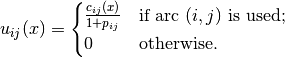
and penalize the most expensive used arcs according to their utility.
Let’s recall the way the RL (Routing Library) encodes the traversing of an arc in a solution with vars_[i] = j, i.e. from node go to node where vars_[i] denotes the IntVar variable corresponding to node . If no arc is traversed from node (for instance node is an arrival depot or is not visited at all in a solution), RL’s convention is to set vars_[i] = i.
Because we only update the penalties in this callback, notice that the GLS is only triggered after a local optimum has been found.
We are now ready to read the code:
1 2 3 4 5 6 7 8 9 10 11 12 13 14 15 16 17 18 19 20 21 22 23 24 25 26 27 28 29 | bool LocalOptimum() {
std::vector<std::pair<Arc, double> > utility(vars_.size());
for (int i = 0; i < vars_.size(); ++i) {
if (!assignment_.Bound(vars_[i])) {
// Never synced with a solution, problem infeasible.
return false;
}
const int64 var_value = assignment_.Value(vars_[i]);
const int64 value =
(var_value != i) ? AssignmentPenalty(assignment_, i, var_value) : 0;
const Arc arc(i, var_value);
const int64 penalty = penalties_->Value(arc);
utility[i] = std::pair<Arc, double>(arc, value / (penalty + 1.0));
}
Comparator comparator;
std::stable_sort(utility.begin(), utility.end(), comparator);
int64 utility_value = utility[0].second;
penalties_->Increment(utility[0].first);
for (int i = 1; i < utility.size() &&
utility_value == utility[i].second; ++i) {
penalties_->Increment(utility[i].first);
}
if (maximize_) {
current_ = kint64min;
} else {
current_ = kint64max;
}
return true;
}
|
The method is divided in 3 sections: lines 2 to 14 to compute the utilities, lines 15 to 22 to penalize the arcs according to their utilities and finally lines 23 to 28 to reset the value of the current_ variable that we use to bound our solutions in the Local Search.
In the first section (lines 2 to 14), we compute the utilities as follow. The utility of each variable vars_[i] is stored in the std::vector<std::pair<Arc, double> > utility array.
As you can read, we have to test if the solution if feasible, i.e. if each of its variable is bounded or not. This is done on lines 4 to 7.
For an arc ((i, var_value)), we compute its cost value: 0 if the arc is not traversed in the solution or AssignmentPenalty(assignment_, i, var_value) otherwise, i.e. the cost
to traverse arc in the solution. On line 13, the utility 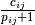 is computed for the outgoing arc .
In the second section (lines 15 to 22), we only penalize arcs with the highest utility. First, we sort the utilities in descending order with the help of our Comparator in lines 15 and 16. On lines 17 and 18, we penalize the arc with the highest utility. The for loop on lines 19 to 22, penalize only the arcs with the same utility (utility_value == utility[i].second).
The third section (lines 23 to 28) is by now no surprise. We reset the value of the current_ variable such that we can bound the solutions in the Local Search by a higher value than for instance the value of the best solution: this allows the meta-heuristic to escape local optima.
7.6.4.6. AtSolution()
The AtSolution() method is called whenever a solution is found and accepted in the Local Search
bool AtSolution() {
if (!Metaheuristic::AtSolution()) {
return false;
}
if (penalized_objective_ != nullptr) { // no move has been found
current_ += penalized_objective_->Value();
}
assignment_.Store();
return true;
}
We update the best solution (Metaheuristic::AtSolution()) and the augmented objective function . This is done as follow: first we update the current_ variable with the current objective value (again in Metaheuristic::AtSolution()) and then we add the “penalized part” from penalized_objective_->Value(). We also store the current solution.
7.6.4.7. ApplyDecision()
The ApplyDecision() method is called when a Decision is about to be applied. This is the place to add the constraints.
1 2 3 4 5 6 7 8 9 10 11 12 13 14 15 16 17 18 19 20 21 22 23 24 25 26 27 28 29 30 31 32 33 34 35 36 37 38 39 40 41 42 43 44 45 46 | void ApplyDecision(Decision* const d) {
if (d == solver()->balancing_decision()) {
return;
}
std::vector<IntVar*> elements;
assignment_penalized_value_ = 0;
if (penalties_->HasValues()) {
for (int i = 0; i < vars_.size(); ++i) {
IntExpr* expr = MakeElementPenalty(i);
elements.push_back(expr->Var());
const int64 penalty = AssignmentElementPenalty(assignment_, i);
current_penalized_values_[i] = penalty;
delta_cache_[i] = penalty;
assignment_penalized_value_ += penalty;
}
old_penalized_value_ = assignment_penalized_value_;
incremental_ = false;
penalized_objective_ = solver()->MakeSum(elements)->Var();
if (maximize_) {
IntExpr* min_pen_exp =
solver()->MakeDifference(current_ + step_, penalized_objective_);
IntVar* min_exp =
solver()->MakeMin(min_pen_exp, best_ + step_)->Var();
solver()->AddConstraint(
solver()->MakeGreaterOrEqual(objective_, min_exp));
} else {
IntExpr* max_pen_exp =
solver()->MakeDifference(current_ - step_, penalized_objective_);
IntVar* max_exp =
solver()->MakeMax(max_pen_exp, best_ - step_)->Var();
solver()->AddConstraint(solver()
->MakeLessOrEqual(objective_, max_exp));
}
} else {
penalized_objective_ = nullptr;
if (maximize_) {
const int64 bound =
(current_ > kint64min) ? current_ + step_ : current_;
objective_->SetMin(bound);
} else {
const int64 bound =
(current_ < kint64max) ? current_ - step_ : current_;
objective_->SetMax(bound);
}
}
}
|
Basically, this method adds the following constraint:
- when minimizing:
- objective <= Max(current penalized cost - penalized_objective - step,
best solution cost - step)
- when maximizing:
- objective >= Min(current penalized cost - penalized_objective + step,
best solution cost + step)
where “current penalized cost” is the augmented objective function value 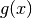 of the current solution and “penalized_objective” - despite its name - corresponds to the penalized part of the
augmented objective function but expressed as an IntExpr.
Let’s dig into the code. As usual, we have to disregard the BalancingDecision on lines 2 to 4. Then we test if we have penalties on line 7. If not (lines 34 to 45), we simply add - in case of minimization - the constraint objective <= current_ - step_ but we do it like an ObjectiveVar by modifying the upper bound on the domain of the objective variable. This avoids one more constraint and is perfectly in line with our aspiration criterion to accept better solution.
The test penalties_->HasValues() on line 7 is true if there is at least one arc with a positive penalty.
If there is one or more penalties, we enter the code on the lines 8 to 32. For each arc ((i, assignment_.Value(vars_[i]))) , we create an Element expression corresponding to the Element constraint for the corresponding penalty on line 9. All these Element expressions are collected into a sum stored in the variable penalized_objective_ on line 18. Lines 11 to 14 compute and store the
penalized part of the augmented objective function individually for each node. We skip lines 16 and 17 as they update variables to use with the deltas. Finally, we add the constraint mentioned right after the code in lines 19 to 33. Notice that the part “objective <= current penalized cost - penalized_objective - step” of this constraint for the current solution reduces to “objective <= objective - step” and that the second part allows us to accept better solutions (aspiration criterion).
7.6.4.8. AcceptDelta()
This meta-heuristic is coded efficiently and uses the delta and deltadelta of the LocalSearchOperators. A quick reminder:
- delta: the difference between the initial solution that defines the neighborhood and the current candidate solution.
- deltadelta: the difference between the current candidate solution and the previous candidate solution. We say that the LocalSearchOperator is incremental.
The AcceptDelta() method of a SearchMonitor can accept or refuse a candidate solution. It is filtering the solutions and the result of this callback in the main Local Search algorithm (see the sub-section The basic Local Search algorithm and the callback hooks for the SearchMonitors) is stored in a variable that has a very interesting name: meta_heuristics_filter.
The AcceptDelta() callback from the GuidedLocalSearch class computes the penalized value corresponding to the deltas and modifies their objective bound accordingly.
1 2 3 4 5 6 7 8 9 10 11 12 13 14 15 16 17 18 19 20 21 22 23 24 25 26 27 28 29 30 31 32 33 34 35 36 37 38 39 40 41 42 43 44 45 46 47 48 | bool AcceptDelta(Assignment* delta, Assignment* deltadelta) {
if ((delta != nullptr || deltadelta != nullptr) &&
penalties_->HasValues()) {
int64 penalty = 0;
if (!deltadelta->Empty()) {
if (!incremental_) {
penalty = Evaluate(delta,
assignment_penalized_value_,
current_penalized_values_.get(),
true);
} else {
penalty = Evaluate(deltadelta,
old_penalized_value_,
delta_cache_.get(),
true);
}
incremental_ = true;
} else {
if (incremental_) {
for (int i = 0; i < vars_.size(); ++i) {
delta_cache_[i] = current_penalized_values_[i];
}
old_penalized_value_ = assignment_penalized_value_;
}
incremental_ = false;
penalty = Evaluate(delta,
assignment_penalized_value_,
current_penalized_values_.get(),
false);
}
old_penalized_value_ = penalty;
if (!delta->HasObjective()) {
delta->AddObjective(objective_);
}
if (delta->Objective() == objective_) {
if (maximize_) {
delta->SetObjectiveMin(
std::max(std::min(current_ + step_ - penalty, best_ + step_),
delta->ObjectiveMin()));
} else {
delta->SetObjectiveMax(
std::min(std::max(current_ - step_ - penalty, best_ - step_),
delta->ObjectiveMax()));
}
}
}
return true;
}
|
This method returns true on line 47 as it accepts every delta. The whole update can only be applied if at least a delta is present and if penalties exist. This is precisely the test on lines 2 and 3. The code on lines 4 to 31 updates the penalized value of the candidate solution. The code is a little bit intricate because it has to be generic: we test the presence of the deltadelta and delta data structures and update the incremental_ parameter accordingly. When then use the best (aka most efficient) method to update this penalized value with a call to Evaluate(). On lines 35 to 45, we update the bound of delta: this can speed up the process to accept or reject this candidate solution.
7.6.5. The real classes
GuidedLocalSearch classes come in two flavors:
- BinaryGuidedLocalSearch:
- TernaryGuidedLocalSearch:
7.6.5.1. BinaryGuidedLocalSearch
The BinaryGuidedLocalSearch class is used for Routing Problems where the traversing of an edge doesn’t depend on the type of vehicles, i.e. the cost is the same for all vehicles.
Here is the constructor:
BinaryGuidedLocalSearch::BinaryGuidedLocalSearch(
Solver* const solver,
IntVar* const objective,
Solver::IndexEvaluator2* objective_function,
bool maximize,
int64 step,
const std::vector<IntVar*>& vars,
double penalty_factor)
: GuidedLocalSearch(solver,
objective,
maximize,
step,
vars,
penalty_factor),
objective_function_(objective_function) {
objective_function_->CheckIsRepeatable();
}
The variables vars are the main variables corresponding to the nodes. The objective function is a callback that takes two int64 and returns an int64. Basically, it’s the cost of traversing
the arc .
The corresponding factory method is:
SearchMonitor* Solver::MakeGuidedLocalSearch(
bool maximize,
IntVar* const objective,
ResultCallback2<int64, int64, int64>* objective_function,
int64 step,
const std::vector<IntVar*>& vars,
double penalty_factor) {
return RevAlloc(new BinaryGuidedLocalSearch(this,
objective,
objective_function,
maximize,
step,
vars,
penalty_factor));
}
7.6.5.2. TernaryGuidedLocalSearch
This version was especially made to deal with heterogeneous costs for different vehicles in the Routing Library: the cost of an arc also depends on the vehicle used. At the initialization of the Routing Solver, the GuidedLocalSearch meta-heuristic is created as follow:
...
switch (metaheuristic) {
case ROUTING_GUIDED_LOCAL_SEARCH:
if (CostsAreHomogeneousAcrossVehicles()) {
optimize = solver_->MakeGuidedLocalSearch(
false, cost_,
NewPermanentCallback(this, &RoutingModel::GetHomogeneousCost),
FLAGS_routing_optimization_step, nexts_,
FLAGS_routing_guided_local_search_lambda_coefficient);
} else {
optimize = solver_->MakeGuidedLocalSearch(
false, cost_,
NewPermanentCallback(this, &RoutingModel::GetArcCostForVehicle),
FLAGS_routing_optimization_step, nexts_, vehicle_vars_,
FLAGS_routing_guided_local_search_lambda_coefficient);
}
break;
...
}
If the costs are the same for all vehicles, we use the int64 RoutingModel::GetHomogeneousCost(int64 i, int64 j) costs. This method takes two int64: the index of the first node i and the index of the second node j. If on the contrary, the costs depend on the vehicle traversing an arc (i, j), we use the int64 RoutingModel::GetArcCostForVehicle(int64 i, int64 j, int64 k) costs: the third int64 k corresponds to the index of the vehicle type used to traverse the arc (i, j).
The corresponding factory method is:
SearchMonitor* Solver::MakeGuidedLocalSearch(
bool maximize,
IntVar* const objective,
ResultCallback3<int64, int64, int64, int64>* objective_function,
int64 step,
const std::vector<IntVar*>& vars,
const std::vector<IntVar*>& secondary_vars,
double penalty_factor) {
return RevAlloc(new TernaryGuidedLocalSearch(this,
objective,
objective_function,
maximize,
step,
vars,
secondary_vars,
penalty_factor));
}
The secondary secondary_vars variables are simply the variables corresponding to the vehicles.
7.6.6. Guidelines to write your own GLS
GLS is a good meta-heuristic and it might be worth to give it a try to solve your problem.
As we have seen, our implementation of the GLS is heavily optimized: not only do we use GLS filtering (AcceptDelta()) but the implementation is especially tailored for Routing Problems and objective functions of the form 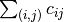. What if you have a problem that doesn’t fit into this canvas? Create your own version of the GLS!
We give you some hints on how to do that in this sub-section.
First, you have to change the call to a 2-indices or 3-indices callbacks to compute the objective function value.
Second, if you look carefully at the code of the abstract GuidedLocalSearch class, you’ll find that the only method that really depends on 2 indices is the AssignmentPenalty() method. This method is only used in the LocalOptimum() callback.
Third, you have to adapt all 2- and 3-indices data structures such as for instance the GuidedLocalSearchPenalties classes.
Finally, you have to decide if you need GLS filtering or not.
All in all, the GuidedLocalSearch, BinaryGuidedLocalSearch, TernaryGuidedLocalSearch and GuidedLocalSearchPenalties, GuidedLocalSearchPenaltiesTable, GuidedLocalSearchPenaltiesMap classes give you a good example on how to implement your own GLS.
Footnotes
| [1] | There is also a version with 3 indices , and where the cost function returns the cost of traversing an arc with a vehicle , i.e.
the cost of traversing an arc depends on the type of vehicles used. Read on. |
| [2] | See the sections The model behind the scene: overview and The Routing Library (RL) to understand the juicy details. We omit these details here as they are not important to understand the GLS algorithm. |
| [3] | The hash_map data structure is compiler dependent but it is exactly what its name says: a hash map. |
| [4] | This is a very common idiom in C++. Not only does it allow to construct more robust code (you can use functions and/or classes) and use the STL (Standard Template Library) but it also allows you to use states (variables) and most compilers can do some tricks to speed up the code. See http://en.wikipedia.org/wiki/Function_object#In_C_and_C.2B.2B for more. |
Google or-tools |
User's Manual
Google search
Welcome
Tutorial examples
Current chapter
7. Meta-heuristics: several previous problems
Previous section
Next section
7.7. Large neighborhood search (LNS): the Job-Shop Problem